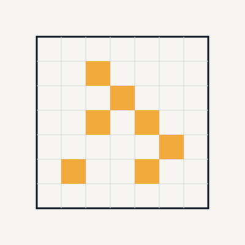

Conway's Game of Life
APSC 160: cellular automaton simulation in C
A from-scratch version of Conway's Game of Life, written in C for APSC 160. It's a simulation where you have a grid of live and dead cells, and every generation the same four rules get applied to every cell: a live cell with 2 or 3 live neighbors survives, a dead cell with exactly 3 live neighbors comes alive, and everything else dies or stays dead. What's interesting is that those four simple rules can produce really complex patterns, some stable and some chaotic, depending purely on how you set up the starting board.
The trickiest part was making sure I copied the board before updating it. Every cell's next state depends on its neighbors' current state, so if you update a cell in place while other cells still need to read its old value, you end up corrupting the whole calculation partway through. Copying the board first means every new cell is calculated purely from the old generation, so there's no risk of reading a value that's already been changed.
Counting neighbors is where most of the actual difficulty was. A cell in the middle of the board has 8 neighbors, but edge cells only have 5, and corner cells only have 3. So the counting function has to handle those edge cases properly instead of just assuming every cell is in the middle of the grid. I got this working with bounds-checking inside the neighbor loop, rather than writing separate code for edges and corners.
The transition function is what actually pulls board-copying and neighbor-counting together. For each cell, it counts the live neighbors from the original board and applies the rules to figure out that cell's next state, without touching any cell the counting function still needs to read. End result: a simulation that works correctly no matter what pattern you start it with, whether that's something simple that just oscillates back and forth or something denser and more chaotic.
